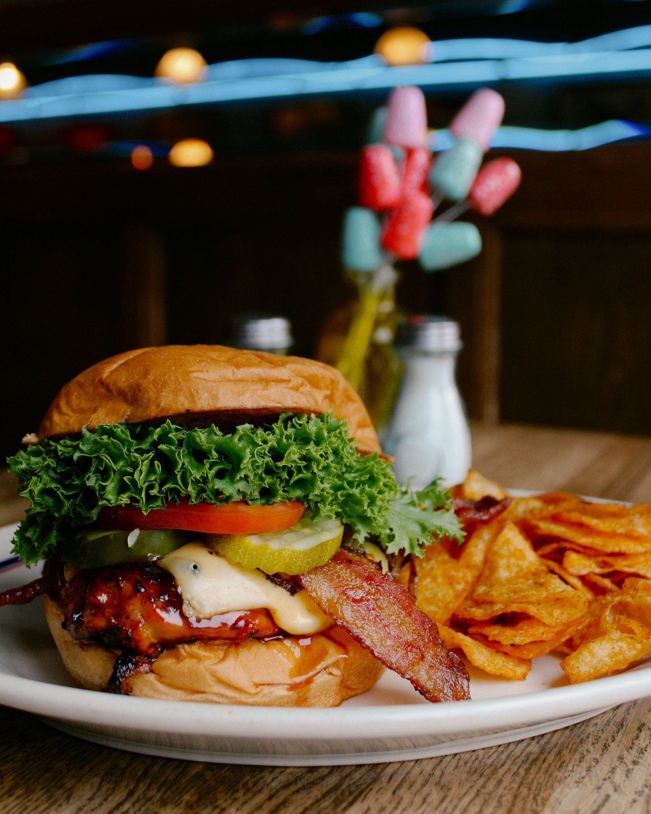

CCB’S Grill Honey-Sweet Chicken Sandwich
Limited honey-sweet Barebecue Chicken Sandwich
Cluckin’ Chicken bell present a new edition the family for a limited time during the holiday season, to make sure your stomach and wallet both feel satisfy after your purchase.
INGREDIENTS
Getting the recipe together
- 2 chicken breast
- Salt, Pepper, Garlic powder, smoked paprika
- 3 Tbsp of butter
- buffalo Wild wings Honey BBQ Sauce
- 4 Buns
- 8 pieces of cooked bacon
- Pepperjack Cheese
- lettuce
- fresh Tomatoes
- Onions
- (Condiments of your choosing)
STEPS
- Bake the bacon on a sheet pan in the oven at four-hundred (400°F) degrees for twenty(20) to twenty-five(25) minutes.
- Slice the chicken breast in half lengthwise to make them thinner.
- Then season your chicken breast on both sides with salt, pepper, garlic powder, smoked paprika
- Once seasoned, heat a skillet over medium high-heat and melt 2tbsp of butter
- Then add the chicken breast to the skillet and let it sear in the skillet for a couple of minutes
- Remove the skillet from the heat and brush on some of the BBQ sauce to the tops of the chicken
- Next, put the chciken breast in the oven and have the oven set four-hundred (400°F) degrees for ten(10) to twelve(12) minutes to fully cooked
- Melt another piece of butter (1 tbsp) in the skillet over medium-heat and toast the buns to golden brown.
- Once the chicken is cooked, add some cheddar cheese and put back in the oven for just a few minutes to just melt the cheese.
- Lastly, combined your creation into a sandwich, add the cooked bacon, lettuce, tomatoes and onions to your burger in anyway you see fit.